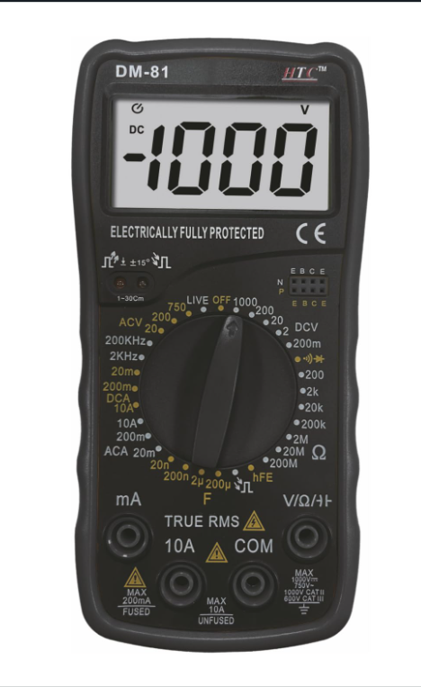

Beginner's Lab: How to Use a Multimeter
Back to Lab
The Digital Multimeter (DMM) is the most critical diagnostic tool for any electronics student. It allows you to "see" the invisible forces in your circuit by measuring Voltage, Current, and Resistance.
Core Measurement Techniques
1. Measuring DC Voltage (Batteries & Power Supplies)
- Plug the Black probe into the COM port.
- Plug the Red probe into the VΩmA port.
- Turn the dial to the DC Voltage section (usually a 'V' with straight lines) and select a range higher than what you expect to measure (e.g., 20V for a 9V battery).
- Place probes in parallel across the component.
2. Testing for Continuity (Finding Broken Wires)
- Turn the dial to the Continuity symbol (looks like a sound wave or diode).
- Touch the two probes together. You should hear a loud *BEEP*! This means a complete circuit exists.
- Touch the probes to either end of a wire or PCB trace. If it beeps, the connection is solid. If it remains silent, there is a break.
Safety Warning: NEVER measure resistance or continuity on a live circuit with power running through it. You will blow the internal fuse of the multimeter!
3. Testing DC Current
- Turn the dial to the DC Current section (usually a 'A' with straight lines).
- Plug the Red probe into the mA or A port (depending on the expected current).
- Select a range higher than what you expect to measure.
- Place the multimeter in series with the component you want to measure.
4. Measuring Resistance (Resistors & Continuity)
- Turn the dial to the Resistance section (usually a 'Ω' symbol).
- Place the probes across the resistor or component. The multimeter will display the resistance value.
- For continuity testing, if the resistance is very low (close to 0Ω), it indicates a good connection.
5. Testing Diodes
- Turn the dial to the Diode test mode (usually a diode symbol).
- Place the red probe on the anode and the black probe on the cathode of the diode.
- A good diode will show a voltage drop (typically around 0.6-0.7V for silicon diodes) in one direction and 'OL' (over limit) in the reverse direction.
6. Testing Transistors
- Turn the dial to the hFE or Transistor test mode (if available).
- Identify the transistor's pinout (Base, Collector, Emitter).
- Place the probes according to the multimeter's instructions to measure the transistor's gain (hFE) or check for shorts between pins.
7. Testing Capacitors
- Turn the dial to the Capacitance test mode (if available).
- Discharge the capacitor completely before testing.
- Place the probes across the capacitor terminals. The multimeter will display the capacitance value.
Safety Warning: Always discharge capacitors before testing to avoid damaging your multimeter or getting a shock!
8. Testing Inductors
- Turn the dial to the Inductance test mode (if available).
- Place the probes across the inductor terminals. The multimeter will display the inductance value.
- If no inductor mode is present, you can also test for continuity. A good inductor should show low resistance (close to 0Ω) indicating the coil is not broken.